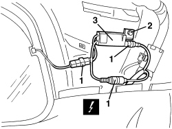

5570T28 CONTROL UNIT FOR RADIO AERIAL - R.R.
- Path
- Procedures > 55 ELECTRICAL EQUIPMENT > 5570 ACCESSORIES > 5570T CAR RADIO/CAR TELEPHONE/VIDEO > 5570T28 CONTROL UNIT FOR RADIO AERIAL - R.R.
- Kind
- repair procedure (removal / refitting; the operation number is the code)
- Applies to
- all engines; all production periods
- Interactive page
- https://sloeber94.github.io/elrnDB-aBrrSpdr/en/#/946002445
Applies to: all engines; all production periods
 Removing
Removing
 Refitting
Refitting- Remove the rear parcel shelf
Op. 7050A22 REAR SEAT CUSHION - R+R
- Work on the right side
Op. 7040H42 REAR PILLAR TRIM (ONE), LEFT OR RIGHT- R.R
1. Disconnect the aerial connections.
Description | Component |
|---|---|
AERIAL POWER SUPPLY/AMPLIFIER |
2. Undo the bolt.
3. Remove the control unit for the radio aerial.

Applies to: all engines; all production periods
Refitting
Removing- Check that the control unit for the radio aerial is not damaged.
- Position the control unit for the radio aerial.
- Tighten the bolt.
- Connect the aerial connections.
Op. 7040H42 REAR PILLAR TRIM (ONE), LEFT OR RIGHT- R.R
Op. 7050A22 REAR SEAT CUSHION - R+R
- Refit the rear parcel shelf.
- Check that the radio is working.
Topics linked from this page (3)
- 7040H42 REAR PILLAR TRIM (ONE), LEFT OR RIGHT- R.R
- 7050A22 REAR SEAT CUSHION - R+R
- P025 AERIAL FEED/AMPLIFIER